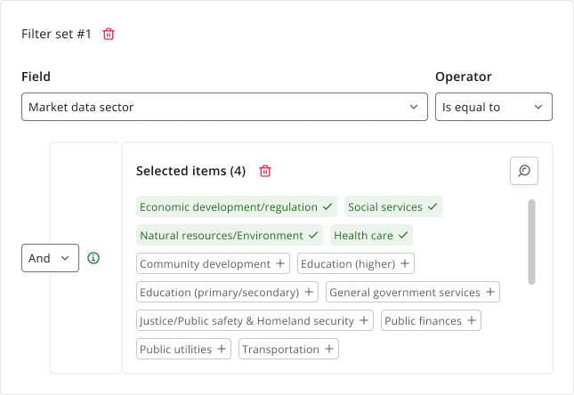
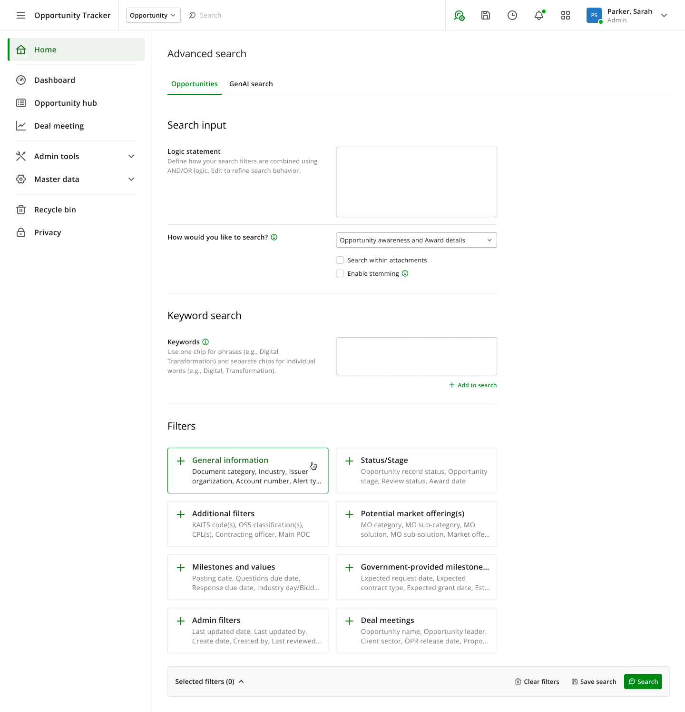
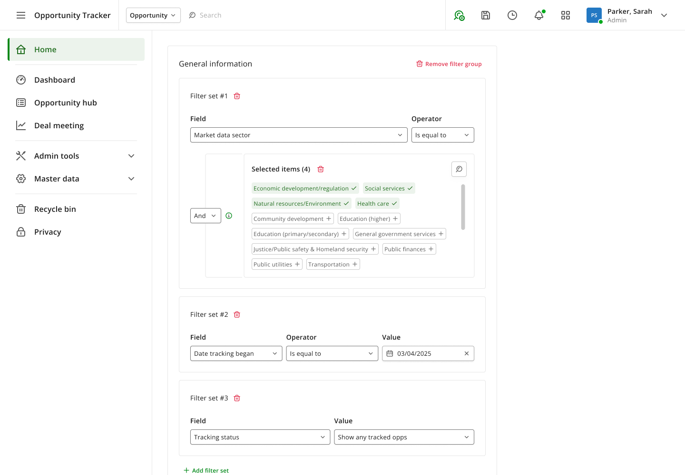
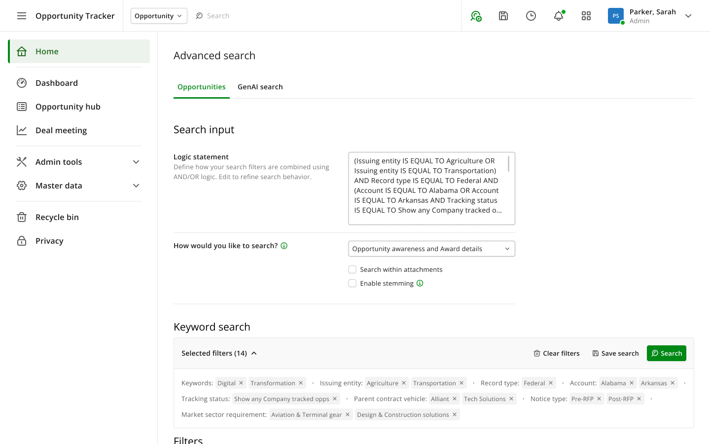
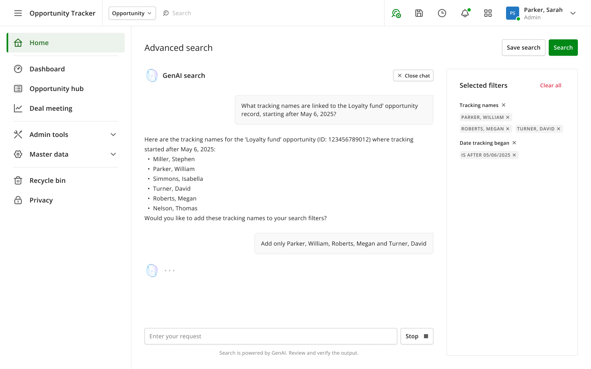
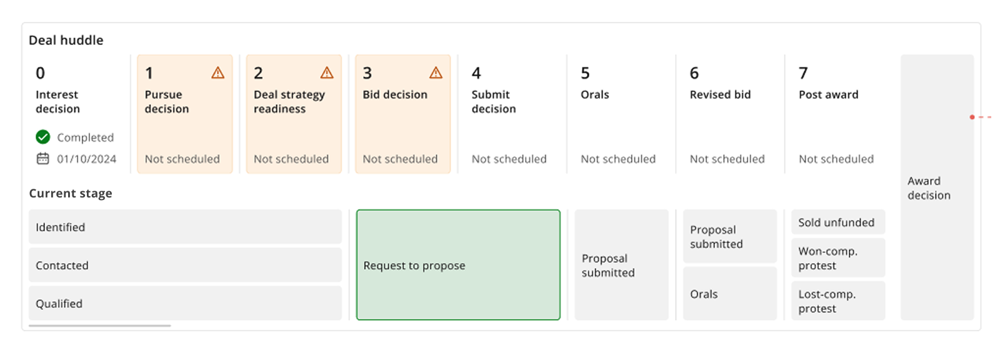
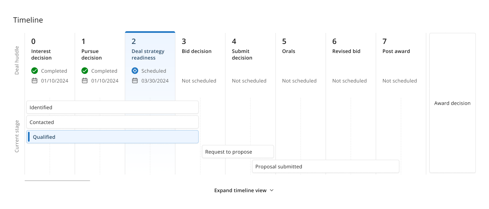
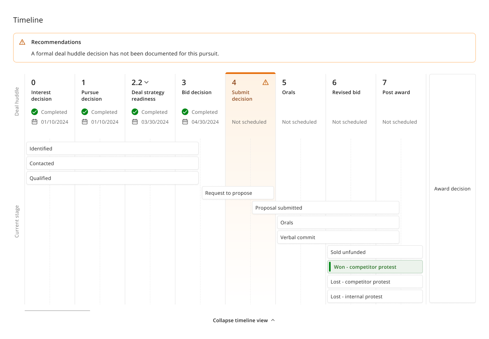

Making a complex system legible
Market intelligence platform for public sector opportunities

- Constraint
- Dozens of searchable fields, boolean combination, deep taxonomies, in a regulated domain where a wrong result set means a missed bid.
- Decision
- Replace the fixed form with composable filter sets, and let each control follow the field type rather than the layout.
- Trade-off
- It is comprehensible, not easy.
- Role
- Product designer, one of two, each owning separate areas
- Timeframe
- Around 6 months, across two stints
- Context
- Enterprise platform tracking public sector contract opportunities from first interest through to award
- Outcome
- Advanced search rebuilt from a fixed form into a composable query builder. Timeline redesigned after usability testing, with strong preference from users.
[ 01 ]The platform
The system tracks government sector opportunities from first interest through to award. Pursuit teams use it to find opportunities worth bidding on, then to manage each deal through a formal sequence of approvals.
Two areas were mine. I joined at the start, moved to another project, and was brought back specifically for the harder problems.
[ 02 ]Advanced search, and what was wrong with it
Finding opportunities meant filling in a form of field after field laid out in two fixed columns, with further collapsed panels beneath for market offerings, milestones and admin filters. Accordions inside accordions, and filter groups within those — far more than any one screen could hold at once.
Two problems, and only one of them was cosmetic.
- The layout could not adapt to the field. Every field got the same treatment regardless of what it was. A date, a status and a multi-select taxonomy all sat in the same shaped row, which is why the And/Or operators ended up in places that made no logical sense next to the thing they governed.
- The structure was fixed, so the query was fixed. The form let you fill in values. It did not let you build a search. If your question needed the same field twice with different operators, or three conditions combined in a particular order, the form had no way to express it.
Users were working around a tool that could not ask the questions they had.
[ 03 ]Rebuilding it as a query you assemble
I moved it from a form you fill in to a query you assemble.

- Filter groups as entry points. Eight cards, each naming a group and previewing which fields sit inside it. You see the shape of the entire search space before opening anything, and you only expand what you need. Nested accordions replaced with one level of deliberate disclosure.
- Filter sets inside each group. A set is a field, its operator, and its values. Add as many as the question needs, combine them with And or Or. Groups hold sets across different fields, so one General information group can carry a sector taxonomy, a date condition and a tracking status together.
- Controls driven by the field, not the layout. Pick a date and you get a date picker. Pick a status and you get a single select. Pick a taxonomy and you get a multi-select container with its own And/Or, selected chips promoted to the top so your choices never scroll out of view, capped height with a scrollbar, and a name search that expands when the list gets long. Some fields carry no operator at all, and the row simply does not show one.
- State never hidden. A persistent bar shows every active filter as a removable chip, grouped by field, with a live count. Sixteen filters applied reads as sixteen visible chips, not as a collapsed panel you have to remember the contents of.

Letting the row follow the field is the piece that made it scale. The old form failed at that scale because one layout had to serve every type. Adding fields no longer adds confusion.

What it did not do
I will not claim this made advanced search easy. It is a regulated domain with dozens of fields, boolean combination, and taxonomies several levels deep. That complexity is real and no interface removes it.
What the redesign did was make the complexity legible and progressive: visible in structure, revealed on demand, verifiable before you commit. A first-time user still has to learn what a filter set is. The difference is that the interface now teaches them, rather than hiding the concept behind an accordion and hoping.
[ 04 ]Natural language search
Adding natural language search was a stakeholder request rather than my idea, and I used an established chat pattern for it: thread, input, follow-ups.
One decision in it was mine and mattered. The assistant writes into the filter panel, not into the results. Ask a question, and the filters it derives appear in the side panel where you can inspect each chip, remove any of them, and then run or save the search yourself.
Natural language search usually fails by being unverifiable. Routing the output through the structured builder keeps the filters as the source of truth.

So the AI accelerates the query without becoming a black box in a domain where a wrong result set means a missed bid.
[ 05 ]The deal timeline, and why users skipped it
Every opportunity runs two processes at once: a sequence of formal deal meetings, and the pursuit stage the deal has actually reached. Whether those two agree is the thing the team needs to know, because a mismatch means the record is wrong or the process has been skipped.
The original timeline came out of our design team and was usability tested with the project manager. The testing showed users skipped it, did not notice it, or could not work out what it was showing, even though it sat above the fold. I was brought in to redesign it based on those findings.
Reading the old version, the reason was structural rather than visual. The two processes were drawn as two unrelated lists. Deal meetings ran across the top as numbered cards. Pursuit stages sat below in a loose grid that lined up with nothing. There was no way to see which stage corresponded to which meeting.
The system told users the two stages did not align, then gave them a layout in which that misalignment was impossible to see.

[ 06 ]Putting both processes on one axis

- Both processes on one shared horizontal axis, tracks labelled down the left side. Pursuit stage bars now stretch across and sit beneath the specific deal meeting columns they belong to. The relationship between the two is the layout, so a misalignment shows itself.
- One warning instead of several. The old version marked three consecutive cells with warning icons, which spread attention across cells that were not the problem. The new one marks the single cell that needs attention and tints its whole column, so the eye lands on the right place.
- Expand and collapse. Collapsed shows current position only. Expanded reveals every possible outcome branch, including the award decision paths. Most people need the first, some need the second, and nobody needs both at once.
- Outcome coded by state. The award decision card turns green when won, red when lost, grey when abandoned.

[ 07 ]Result, limits and attribution
The timeline redesign was shown back to users, who strongly preferred it to the original.
Worth stating precisely: that was preference feedback from a review, not a second round of usability testing. Preference is not comprehension, and the honest test would have been whether users could now correctly read a misalignment. I would want that before calling it solved.
The advanced search redesign was mine end to end, including the structural concept. The timeline's original structure and concept came from the previous designer; I redesigned it and added features on top of their foundation. A second designer worked on other areas of the platform throughout, and design decisions were discussed as a team with the project manager and design lead.